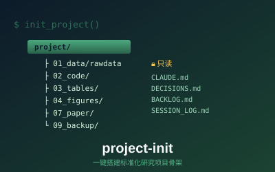
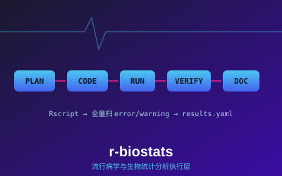
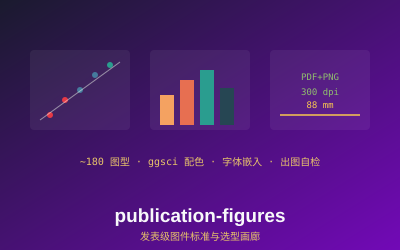

R 语言学习笔记
覆盖统计分析、数据可视化、机器学习和流行病学方法，提供可复现的代码、清晰的方法说明与连续的学习路径。
最近更新
按更新时间排列。更多内容可通过全站搜索或右侧内容导航访问。
把 Claude Code 改造成懂科研规范的流行病学研究助手——从项目初始化、统计分析、发表级图表到论文写作与质控审查，一套带门禁的可复现工作流。
一份好的 CLAUDE.md 不是把所有想法堆进去，而是只留删掉会出错的规则。本文用”删除测试”“分层指针”“硬红线”三个支点，配合一份真实的流行病学科研 CLAUDE.md，讲清楚怎么写、怎么维护。

project-init 把”新建一个研究项目”从手动建文件夹变成一条带问询、自检与下一步指引的标准化流程，一键生成七层目录、模板文件与 Git 配置。本文讲清它的应用场景、用法、内容与下载。

r-biostats 把 R 统计分析变成 PLAN→CODE→RUN→VERIFY→DOC 五阶状态机，每阶必须显式验证才能进入下一阶，从根本上杜绝”写完没跑就说做完”“结果改了没同步”。本文讲清它的应用场景、用法、内容与下载。

publication-figures 让 AI 出图一次到位、不再因字号分辨率配色字体被退回。它内置约 180 种图型选型画廊、mm 级尺寸规范、字体嵌入与出图自检清单。本文讲清它的应用场景、用法、内容与下载。
academic-publishing 把项目里跑完的分析转成可投稿的论文与投稿材料，逐部件门控写作、数据取自单一来源、零编造、零 AI 痕迹。覆盖中文论著、中文学位论文、英文 IMRaD 三条线。本文讲清它的应用场景、用法、内容与下载。
从 Logistic 回归系数出发，构建 Framingham 风格积分系统，完成积分映射、风险分层、ROC 与校准评估
从差异表达数据准备到发表级火山图：阈值设置、标注策略、多对比场景与常见误区。
全面掌握 Claude Code 的使用方法，从基础安装到高级配置，让 AI 成为你的编程助手
使用officer包自动化生成Word、Excel、PowerPoint文档，实现R与Office的无缝集成